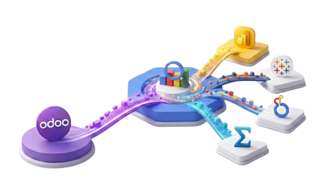
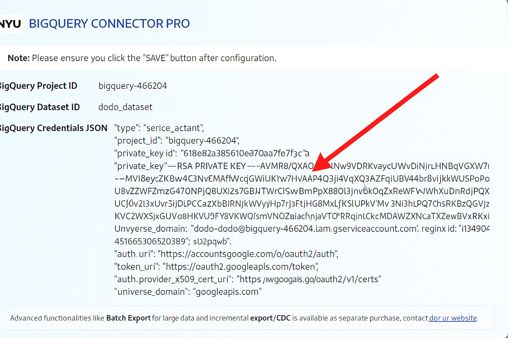
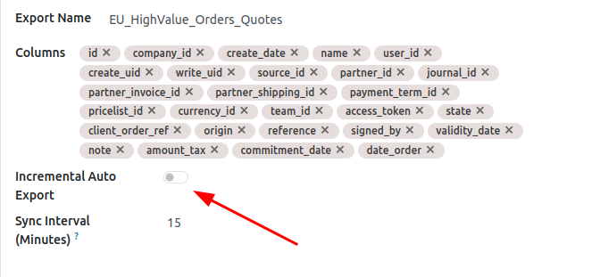
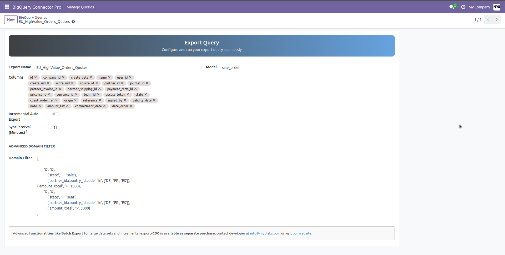
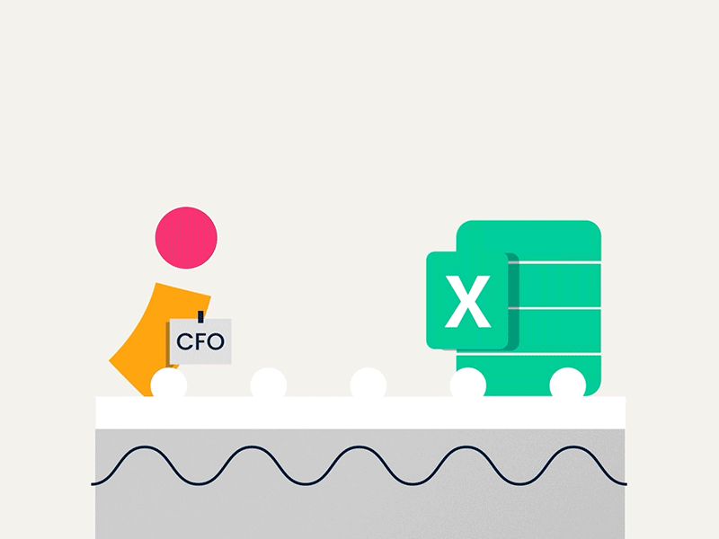

Odoo is for operations.
BigQuery is for analytics.
Keep Odoo fast
Heavy dashboards, joins, filters, pivots and historical analysis should not run on the same database your sales, purchase, inventory and accounting teams use every day.
Give BI clean data
Export only the tables and columns that matter, apply Odoo domain filters, then use BigQuery as the trusted data layer for reports, dashboards and data teams.
Update without rebuilding everything
Incremental sync uses Odoo change markers such as write_date and id, loads batches into staging tables, then updates BigQuery through MERGE.
This is not just a file export button. It is a controllable Odoo-to-BigQuery pipeline inside your Odoo backend.
From Odoo tables to
business-ready analytics.
Configure once in Odoo, push structured data to BigQuery, then connect the tools your team already uses: Power BI, Looker Studio, Tableau, SQL notebooks, machine learning and AI analytics workflows.

Select Odoo tables/models from your database.
Choose columns and apply Odoo domain filters.
Load batches through staging tables and update BigQuery.
Use BigQuery with dashboards, SQL, ML and AI tools.
Connect Odoo to your Google Cloud project.
Add your BigQuery Project ID, Dataset ID and service account JSON from Odoo Settings. Your team controls the Google Cloud destination, dataset and credentials.

Create one export per business question.
For each export, choose the Odoo source table, select only needed columns, add a domain filter, and decide whether it runs manually or on an incremental schedule.

Column-level control
Export only the fields your dashboard needs. This keeps BigQuery tables cleaner and reduces unnecessary data movement.

Odoo domain filters
Use familiar Odoo-style domains such as confirmed orders, posted invoices, active customers, stock locations, or company-specific records.

Incremental auto export
Turn on scheduled sync per query and define the interval. The connector creates or updates the related Odoo cron automatically.

Admins can see what is running, what is done, and what needs attention.
Each export shows status, last sync, last run, latest batch time, rows exported, lock status, alerts, query log count and change log count.
Manual export on demand.
Reset sync cursor and rerun.
Clear failure and retry.
Recover locked exports safely.
Built for large Odoo tables, not demo records.
The connector handles batch processing, stable schema mapping, staging tables, BigQuery MERGE logic, cron continuation and protected runtime state.
Batch export engine
Large datasets are fetched and loaded in batches instead of one fragile all-at-once operation.
Staging + MERGE
Data lands in a temporary BigQuery staging table, then updates/inserts into the final table with MERGE.
Stable schema mapping
Odoo/PostgreSQL types are mapped to BigQuery types, with JSON and unusual values handled safely.
Advisory locks
The export process uses locks and stuck-state detection so duplicate/crashed runs are visible and recoverable.
Your Odoo data becomes queryable inside BigQuery.
Once exported, teams can inspect schema, run SQL, connect BI dashboards, join with marketing/finance/support data, or feed downstream AI and ML projects.

Generated schema
BigQuery receives structured tables with typed fields that BI tools can understand.

Queryable rows
Sales, inventory, accounting, CRM, product, website or custom Odoo data becomes available for SQL and dashboards.
Use the dashboards your team already knows.
BigQuery is the middle layer. After export, your analysts can connect Power BI, Looker Studio, Tableau and other BI tools directly to the warehouse.
Power BI
Connect reports to BigQuery tables.


Looker Studio
Build Google-native dashboards.


Tableau
Analyze Odoo with Tableau.
Managers control exports. Users can inspect safely.
The module includes dedicated BigQuery Connector security groups. Managers can configure and run exports. Users can view connector data, query logs and change logs in read-only mode.
Start, batch, success, warning, error, stuck and cron events.
Track create, update, delete, hard refresh and recovery changes.

Everything customers should see before buying.
Any Odoo table
Pick source tables from the Odoo database and create separate export definitions.
Column selection
Choose exactly which columns should reach BigQuery.
Domain filtering
Export only records matching Odoo business conditions.
Scheduled sync
Enable incremental export and set the interval per query.
Incremental cursor
Tracks last sync timestamp and last synced ID.
Batch processing
Handles large exports in repeatable chunks instead of one risky transfer.
Query logs
See run events, rows exported, messages, errors and cron activity.
Change logs
Audit who changed export name, table, columns, domain or interval.
Stuck-state recovery
Detect and reset exports that were locked by an interrupted run.
User/manager access
Managers operate exports; users inspect records and logs.
Hard refresh
Reset runtime cursor and run the export again from the beginning.
AI/ML ready data
Use BigQuery as the clean layer for analytics, ML and AI reporting projects.
What customers can build after installing it.
The connector is valuable because it moves Odoo data where serious reporting tools can use it.
Sales dashboards
Track quotations, orders, revenue, salespersons, products, regions and customer trends in Power BI or Looker.
Inventory reporting
Analyze stock quantities, moves, warehouses, product categories and historical movement data outside live Odoo.
Finance analysis
Use posted invoices, payments, partners and journal data for executive dashboards and financial reporting layers.
Custom Odoo apps
Export custom module tables and build reporting around workflows that standard BI connectors do not understand.
A connector that looks simple,
but works like infrastructure.
Customers should immediately understand the value: Odoo data goes into BigQuery, and BigQuery becomes the source for dashboards, analytics and AI.

Questions buyers ask before purchase.
Does this replace Power BI, Looker or Tableau?
No. It feeds BigQuery with Odoo data so those tools can read from a proper analytics warehouse.
Can I export only specific records?
Yes. Use Odoo domain filters to restrict records, for example posted invoices, confirmed sales orders, active products or company-specific data.
Can I choose only required fields?
Yes. The query form lets you select columns instead of exporting every field by default.
Does it support incremental sync?
Yes. You can enable incremental auto export per query and set the sync interval. The connector manages related Odoo cron records.
What happens if an export fails?
Admins can inspect the error, clear it, review logs, and reset stuck export state when a previous run was interrupted.
What do I need before setup?
You need a Google Cloud project, a BigQuery dataset and a service account JSON with the required BigQuery permissions.
Make Odoo data usable
outside Odoo.
Clean exports. Column selection. Domain filters. Incremental sync. Batch processing. BigQuery MERGE. Logs. Recovery. BI connections. A practical data layer for companies that have outgrown basic Odoo reporting.
View Product Page →